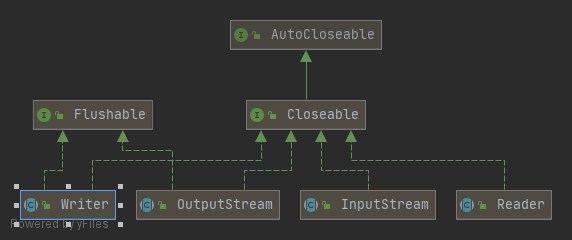

InputStream代表输入字节流，OutputStream代表输出字节流
如果读写的是文本文件则可使用 Reader和Writer表示字符流，字符流传输的最小数据单位是char
字符类型char表示一个字符。Java的char类型除了可表示标准的ASCII外，还可以表示一个Unicode字符

InputStream
InputStream分为两类:
直接提供数据的基础InputStream
- FileInputStream
- ByteArrayInputStream
- ServletInputStream
- …
提供额外附加功能的InputStream(继承自FilterInputStream)
- BufferedInputStream：提供缓冲的功能来提高读取的效率, 默认缓冲区大小是8M
- DigestInputStream: 添加计算签名的功能
- CipherInputStream: 添加加密/解密功能
- …
1 | //数据来源自文件 |
这里用到了装饰器模式：Decorator， 可以让我们通过少量的类来实现各种功能的组合
FileInputStream
从文件流中读取数据
File相关概念解析
- .表示当前目录，..表示上级目录
- getPath()，返回构造方法传入的路径
- getAbsolutePath()，返回绝对路径，
- getCanonicalPath，它和绝对路径类似，但是返回的是规范路径
绝对路径可以表示成C:\Windows\System32..\notepad.exe，而规范路径就是把.和..转换成标准的绝对路径后的路径：C:\Windows\notepad.exe
read()
读取输入流的下一个字节，并返回字节表示的int值（0~255）。如果已读到末尾，返回-1表示不能继续读取了
1 | public void readFile() throws IOException { |
计算机内存的最小存储单元是字节（byte），一个字节就是一个8位二进制数，即8个bit。它的二进制表示范围从00000000
11111111，换算成十进制是0255，换算成十六进制是00~ff, 二进制文件不利于直观查看，可以转成常用的十进制进行展示，因此需要把读取的字节从二进制转成十进制整数，故返回int型
read(byte[] bytes)
此方法是利用缓冲区一次性读取多个字节，效率比一个字节一个字节读取效率要高很多
返回值不再是字节的int值，而是返回实际读取了多少个字节。如果返回-1，表示没有更多的数据了
1 | StringBuilder sb = new StringBuilder(); |
比如某个文本文件大小是3kb, 设置的缓冲区byte[]大小为1024(即1024字节)则while会执行3次，每次n返回1024
transferTo(OutputStream out)
JDK 9新增了InputStream.transferTo(OutputStream)方法，此方法允许从对象调用方法表示的输入流中轻松传输（复制）字节到提供给该方法的输出流。正如方法的Javadoc注释所述，从该输入流中读取所有字节，并按照读取的顺序将字节写入给定的输出流。
1 | //通过try-with-resources语句可以确保两个资源的正确回收 |
注意这个方法和spring提供的不是同一个方法
OutputStream
FileOutputStream
write
写入字节到输出流。要注意的是，如果是write(int)传入的是int参数，但只会写入一个字节，即只写入int最低8位表示字节的部分（相当于b & 0xff）
1 | public void writeFile() throws IOException { |
flush
为什么要有flush()？因为向磁盘、网络写入数据的时候，出于效率的考虑，操作系统并不是输出一个字节就立刻写入到文件或者发送到网络，而是把输出的字节先放到内存的一个缓冲区里（本质上就是一个byte[]数组），等到缓冲区写满了，再一次性写入文件或者网络。对于很多IO设备来说，一次写一个字节和一次写1000个字节，花费的时间几乎是完全一样的，所以OutputStream有个flush()方法，能强制把缓冲区内容输出。
通常情况下，我们不需要调用这个flush()方法，因为缓冲区写满了OutputStream会自动调用它，并且，在调用close()方法关闭OutputStream之前，也会自动调用flush()方法
但是，在某些情况下，我们必须手动调用flush()方法: 写入网络流是先写入内存缓冲区，等缓冲区满了才会一次性发送到网络。如果缓冲区大小是4K，则发送方要敲几千个字符后，操作系统才会把缓冲区的内容发送出去，这个时候，接收方会一次性收到大量消息。 解决办法就是每输入一句话后，立刻调用flush()，不管当前缓冲区是否已满，强迫操作系统把缓冲区的内容立刻发送出去
Reader
Reader是Java的IO库提供的另一个输入流接口。和InputStream的区别是，InputStream是一个字节流，即以byte为单位读取，而Reader是一个字符流，即以char为单位读取
StringReader可以直接把String作为数据源: Reader reader = new StringReader(“Hello”)
FileReader
对读取文件操作系统的封装，所有的读写都是直接操作文件系统。因此如果是频繁读写操作，不建议使用FileReader 和 FileWriter，性能将会非常低，这时你需要使用BufferedReader。
BufferedReader在读取文本文件时，会先尽量从文件中读入字符数据并置入缓冲区，而之后若使用read()方法，会先从缓冲区中进行读取。如果缓冲区数据不足，才会再从文件中读取，使用BufferedWriter时，写入的数据并不会先输出到目的地，而是先存储至缓冲区中。如果缓冲区中的数据满了，才会一次对目的地进行写出
1 | public void readFile() throws IOException { |
FileReader默认的编码与系统相关，例如，Windows系统的默认编码可能是GBK，打开一个UTF-8编码的文本文件就会出现乱码。要避免乱码问题，需要在创建FileReader时指定编码
InputStreamReader
可以把任何InputStream转换为Reader
1 | try (Reader reader = new InputStreamReader(new FileInputStream("src/readme.txt"), StandardCharsets.UTF_8)) { |
Writer
把char转换为byte并输出, 比OutputStream多了一个写入String的方法：void write(String s)
FileWriter
1 | try (Writer writer = new FileWriter("readme.txt", StandardCharsets.UTF_8)) { |
OutputStreamWriter
将任意的OutputStream转换为Writer的转换器
try (Writer writer = new OutputStreamWriter(new FileOutputStream(“readme.txt”), StandardCharsets.UTF_8)) {
// TODO:
}
RandomAccessFile
RandomAccessFile 虽然属于java.io下的类，但它不是InputStream或者OutputStream的子类；它也不同于FileInputStream和FileOutputStream。提供了对文件的读写功能
RandomAccessFile的基本功能有：定位用的getFilePointer()，在文件里移动用的seek()，以及判断文件大小的length()、skipBytes()跳过多少字节数。此外，它的构造函数还要一个表示以只读方式(“r”)，还是以读写方式(“rw”)打开文件的参数。实际它和C的fopen()一模一样，都是直接对文件句柄操作。
构造函数中mode参数传值介绍:
- r 代表以只读方式打开指定文件 。
- rw 以读写方式打开指定文件 。
- rws 读写方式打开，并对内容或元数据都同步写入底层存储设备 。
- rwd 读写方式打开，对文件内容的更新同步更新至底层存储设备 。
1 | //读指定文件的内容，并且输出控制台 |
Files
从Java 7开始，提供了Files和Paths这两个工具类，能极大地方便我们读写文件
1 | //把一个文件的全部内容读取为一个byte[] |
Files提供的读写方法，受内存限制，只能读写小文件，例如配置文件等，不可一次读入几个G的大文件。读写大型文件仍然要使用文件流，每次只读写一部分文件内容
对于大一些的流，为了提高效率就会用到nio的相关知识了，而nio比较复杂，一般都会基于netty来做二次封装